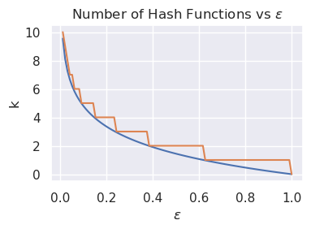
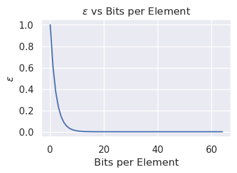

All About Bloom Filters for Hash Joins
Table of Contents
1. Introduction
A Bloom filter is a probabilistic data structure which provides an efficient way to query whether an element is a member of a set. It is typically built over some backing structure (e.g. a hash table), and is used to avoid expensive lookups to the backing structure. A Bloom filter is designed to be space-efficient and cheap to query, but has a probability of returning a false positive (i.e. saying an element is in the backing structure when it is not). Bloom filters are static: they have a build phase and a probe phase. That is, they cannot grow dynamically, and once probing begins, inserting more is not valid.
1.1. Formal Definition
Bloom filters are parameterized by \(n, \epsilon\), where \(n\) is the number of elements to be inserted and \(\epsilon\) is the desired false positive rate. An \((n, \epsilon)-\) Bloom filter \(B\) over some set \(S\) provides two operations:
inserttakes some \(x \in S\) and inserts it into the structure.querytakes some \(y \in S\) and (assuming the number of inserted elements is at most \(n\)):- If
insert(y)was called previously, thenquery(y)returnstrue. - If
insert(y)was not called previously, thenquery(y)returnsfalse(the expected result) with probability \(1 - \epsilon\) ortruewith probability \(\epsilon\) (a false positive).
- If
1.1.1. Algorithm Description
An \((n, \epsilon)-\) Bloom filter \(B\) is an array of \(m\) bits and \(k\) hash functions, where \(m\) and \(k\) are picked in some combination to guarantee the false positive rate is at most \(\epsilon\) when the number of inserted elements is at most \(n\).
uint64_t ComputeHash(const Row &row, int hash_idx); struct BloomFilter { int ComputeNumBits(); int ComputeNumHashFns(); BloomFilter(int n, float eps) : n(n), epsilon(eps) { int m = ComputeNumBits(); bv = new uint8_t[(m + 7) / 8]; } ~BloomFilter() { delete[] bv } int n; float epsilon; void Insert(const Row &row); bool Query(const Row &row); uint8_t *bv; };
To insert, we simply evaluate all \(k\) hash functions on the inserted element and set the corresponding bit in the bit vector.
void BloomFilter::Insert(const Row &row) { int k = ComputeNumHashFns(); for(int i = 0; i < k; i++) { uint64_t hash = ComputeHash(row, i) % m; uint64_t bit_idx = hash % 8; uint64_t byte_idx = hash / 8; bv[byte_idx] |= (1 << bit_idx); } }
Similarly, to query we just check if all of the corresponding bits are set in the bit vector.
bool BloomFilter::Query(const Row &row) { int k = ComputeNumHashFns(); bool result = true; for(int i = 0; i < k; i++) { uint64_t hash = ComputeHash(row, i) % m; uint64_t bit_idx = hash % 8; uint64_t byte_idx = hash / 8; result &= (bv[byte_idx] >> bit_idx) & 1; } return result; }
1.1.2. Choosing \(m\) and \(k\)
For a given \(n, \epsilon\), we'd like to pick \(m, k\) such that \(m\) and \(k\) are minimized while respecting the bound on false positive rate. We can parameterize the relationship between \(\epsilon\) and \(m\) using a bits-per-element metric, \(c = \frac{m}{n}\). It has been shown that for a given \(\epsilon\), the minimum bits per element is \(c = -1.44\log_2{\epsilon}\), with the corresponding number of hash functions being \(k = -\log_2{\epsilon}\) (1). Interestingly, \(k\) is independent of \(n\).
It can also be useful to view \(c\) as the parameter, computing the expected false positive rate. Simply the equation backwards, we get that \(\epsilon = 2^{\frac{c}{-1.44}}\). As you can see below, there are diminishing returns on \(c\) past around \(10\).
 
Simply translating these bounds completes the bloom filter:
constexpr int BloomFilter::ComputeNumBits() { return static_cast<int>(-1.44 * n * std::log2(epsilon) + 0.5); } constexpr int BloomFilter::ComputeNumHashFns() { return static_cast<int>(-std::log2(epsilon) + 0.5); }
1.2. Practical Implementation
While conceptually elegant, the standard Bloom filter is extremely inefficient. Even setting aside the inefficiency of evaluating several hash functions on the same data, consider a Bloom filter larger than cache. Assuming perfect hash functions, each bit is set with probability \(\frac{1}{2}\). Since the positions of each bit is random, each lookup will incur a cache miss. For negative lookups, the expected number of misses is thus \(2\), and a positive lookup will require \(k\) cache misses!
1.2.1. Blocked Bloom Filters
The classic way to deal with cache misses is increasing locality, and Bloom filters are no different. We cannot hope to have fewer than one cache miss per lookup in the general case. However, if each bit lookup after the first happens within a cache line, the only cache miss will be for fetching that cache line. Thus we can divide a Bloom filter into many smaller, cache line-sized Bloom filters called "blocks". The first hash function will index a block, and the other \(k - 1\) functions will operate as in the standard filter.
Take note that the false positive rate of a blocked Bloom filter is higher, as each block has its own \(n\). More precisely, if there are \(b\) blocks, each entry has probability of \(\frac{1}{b}\) of being in a given block. If \(X_{ij}\) is an indicator variable of whether entry \(i\) is in block \(j\), the number of entries in block \(j\) \(n_j = \sum\limits_{i = 1}^{n} X_{ij}\), which implies that \(n_j\) is a random variable following the Binomial distribution \(B(n, \frac{1}{b})\). As such some blocks will be underloaded and others will be overloaded. While the overall effect on space efficiency is not immediately clear, Putze, Felix and Sanders, Peter and Singler, Johannes give a detailed analysis. They show a slight increase in false positive rate, and provide a detailed analysis of the space overhead needed to compensate.
uint8_t *BlockedBloomFilter::GetBlock(const Row &row) { int num_blocks = m / CACHE_LINE_BITS; int block_idx = ComputeHash(row, 0) % num_blocks; return bv + block_idx; } void BlockedBloomFilter::Insert(const Row &row) { int k = ComputeNumHashFns(); uint8_t *block = GetBlock(row); for(int i = 1; i < k; i++) { uint64_t hash = ComputeHash(row, i) % CACHE_LINE_BITS; uint64_t bit_idx = hash % 8; uint64_t byte_idx = hash / 8; block[byte_idx] |= (1 << bit_idx); } } bool BlockedBloomFilter::Query(const Row &row) { int k = ComputeNumHashFns(); uint8_t *block = GetBlock(row); bool result = true; for(int i = 1; i < k; i++) { uint64_t hash = ComputeHash(row, i) % CACHE_LINE_BITS; uint64_t bit_idx = hash % 8; uint64_t byte_idx = hash / 8; result &= (1 << bit_idx); } }
1.2.2. Bit Patterns
Cache misses aside, the other major overhead of the classic Bloom filter is the evaluation of several hash functions. Hash functions can be expensive, and setting \(k - 1\) bits separately can quickly eat up cycles. Rather than evaluating \(k\) hash functions, we can use a single hash function to choose a random entry from a table of bit patterns. Each bit pattern is cache line-sized, and has \(k\) bits set. Using SIMD instructions (such as AVX2), a query be done very efficiently, comparing parts of the block to the pattern in parallel.
Bit Patterns come at the cost of once again increasing false positive rate due to there being a chance of two elements hashing to the same pattern.
static constexpr uint8_t *PATTERNS; // Computed in some clever fashion static constexpr int NUM_PATTERNS; uint8_t *GetPattern(const Row &row) { uint64_t hash = ComputeHash(row); // We only have one hash function int pattern_idx = hash % NUM_PATTERNS; return PATTERNS + pattern_idx * CACHE_LINE_BYTES; } void PatternedBlockedBloomFilter::Insert(const Row &row) { uint8_t *pattern = GetPattern(row); uint8_t *block = GetBlock(row); __m256i pattern_lo = _mm256_loadu_si256(pattern); __m256i pattern_hi = _mm256_loadu_si256(pattern + sizeof(__m256i)); __m256i block_lo = _mm256_loadu_si256(block); __m256i block_hi = _mm256_loadu_si256(block + sizeof(__256i)); __m256i new_block_lo = _mm256_or_si256(pattern_lo, block_lo); __m256i new_block_hi = _mm256_or_si256(pattern_hi, block_hi); _mm256_storeu_si256(pattern, new_block_lo); _mm256_storeu_si256(pattern + sizeof(__256i), new_block_hi); } bool PatternedBlockedBloomFilter::Query(const Row &row) { uint8_t *pattern = GetPattern(row); uint8_t *block = GetBlock(row); __m256i pattern_lo = _mm256_loadu_si256(pattern); __m256i pattern_hi = _mm256_loadu_si256(pattern + sizeof(__m256i)); __m256i block_lo = _mm256_loadu_si256(block); __m256i block_hi = _mm256_loadu_si256(block + sizeof(__256i)); __m256i set_lo = _mm256_and_si256(pattern_lo, block_lo); __m256i set_hi = _mm256_and_si256(pattern_hi, block_hi); __m256i zero = _mm256_setzero_si256(); __m256i cmp_lo = _mm256_cmpeq_epi8(set_lo, zero); __m256i cmp_hi = _mm256_cmpeq_epi8(set_hi, zero); bool nonzero_lo = _mm256_movemask_epi8(cmp_lo) != 0xff; bool nonzero_hi = _mm256_movemask_epi8(cmp_hi) != 0xff; return nonzero_lo || nonzero_hi; }
1.2.3. Register Blocking
A Register-Blocked Bloom filter (2) sacrifices even more precision in favor of processing efficiency by making the blocks machine word-sized (i.e. 32 or 64 bits). This allows lookups to be processed in one comparison instruction, which is even more efficient than the SIMD implementation of the patterned blocked Bloom filter. In fact, it allows for multiple parallel queries into the filter using SIMD, since a single SIMD register would be able to hold four or eight blocks.
static constexpr int NUM_PATTERNS; static uint64_t PATTERNS[NUM_PATTERNS]; // Computed in some clever fashion uint64_t GetPattern(const Row &row) { uint64_t hash = ComputeHash(row); // We only have one hash function int pattern_idx = hash % NUM_PATTERNS; return PATTERNS[pattern_idx]; } uint64_t *PatternedRegisterBlockedBloomFilter::GetBlock(const Row &row) { int num_blocks = m / 64; int block_idx = ComputeHash(row) % num_blocks; return reinterpret_cast<uint64_t *>(bv) + block_idx; } void PatternedRegisterBlockedBloomFilter::Insert(const Row &row) { uint64_t pattern = GetPattern(row); uint64_t *block = GetBlock(row); *block |= pattern; } bool PatternedRegisterBlockedBloomFilter::Query(const Row &row) { uint64_t pattern = GetPattern(row); uint64_t *block = GetBlock(row); return *block & pattern; }
1.2.4. Regaining Randomness
This section shows some cheap ways of increasing the precision of the Bloom filter without sacrificing performance. The most
obvious is to observe that all of the example code above has used mod to map from a hash to an index (i.e. hash % n).
This reuses the same bottom bits of the hash repeatedly, making the pattern and block indices correlated in some sense. A
smarter strategy is to dedicate some bits of the hash to each component of the lookup. A cheap way (in particular for the
register-blocked Bloom filter) to generate more bit patterns without space overhead is by dedicating a few bits of the hash to
a rotation of the bit pattern. The remaining bits can then be used for the block index.
static constexpr int LOG_NUM_PATTERNS = 10; static uint64_t PATTERNS[1 << LOG_NUM_PATTERNS]; // Computed in some clever fashion static constexpr int ROTATE_BITS = 6; // 6 bits for a max rotation of 63 static constexpr uint64_t PATTERN_MASK = (1 << LOG_NUM_PATTERNS) - 1; static constexpr uint64_t ROTATE_MASK = (1 << 6) - 1; uint64_t GetPattern(const Row &row) { uint64_t hash = ComputeHash(row); // We only have one hash function int pattern_idx = hash & PATTERN_MASK; int rotate = (hash >> LOG_NUM_PATTERNS) & ROTATE_MASK; uint64_t pattern = Rotate64(PATTERNS[pattern_idx], rotate); return pattern; } uint64_t *PatternedRegisterBlockedBloomFilter::GetBlock(const Row &row) { int num_blocks = m / 64; uint64_t hash = ComputeHash(row); uint64_t block_idx = (hash >> (ROTATE_BITS + LOG_NUM_PATTERNS)) % num_blocks; return reinterpret_cast<uint64_t *>(bv) + block_idx; } void PatternedRegisterBlockedBloomFilter::Insert(const Row &row) { uint64_t pattern = GetPattern(row); uint64_t *block = GetBlock(row); *block |= pattern; } bool PatternedRegisterBlockedBloomFilter::Query(const Row &row) { uint64_t pattern = GetPattern(row); uint64_t *block = GetBlock(row); return *block & pattern; }
2. Binary Hash Join
Hash Join is an algorithm for evaluating equijoins, where at least one of the join conditions is an equality between "key columns". Hash join has two sides: build and probe (also called "right" and "left" respectively). We build a hash table mapping from key column values to build-side rows. Then, for each probe-side key, hash it, lookup the matching build-side row, and output the matching rows (assuming an inner join).
Dataset InnerHashJoin(Dataset build_side, Dataset probe_side) { HashTable table; for(const Row &row : build_side) table.Insert(row); Dataset result; for(const Row &row : probe_side) for(const Row &match : table.Probe(row)) // You can have multiple build-side matches per probe-side row result.Insert(match + row); // Assuming `+` concatenates two rows return result; }
In the context of a Hash Join, a Bloom filter can be used to avoid performing a hash table lookup. In a join, the heavy lifting associated with building and probing the hash table is unavoidable for the intersection of the two input tables. Bloom filters, never providing false negatives, efficiently short circuit rows that are definitely not in the intersection. There are two possibilities for where to insert a Bloom filter:
- Build-side bloom filter, where a bloom filter is populated while building the hash table. During probing, each row is checked
in the bloom filter first, and if
queryreturnsfalse, then the row is skipped.
Dataset InnerHashJoin_BuildSideBloomFilter(Dataset build_side, Dataset probe_side) { HashTable table; BloomFilter bf(build_side.size(), 0.01); for(const Row &row : build_side) { bf.Insert(row); table.Insert(row); } Dataset result; for(const Row &row : probe_side) { if(bf.Query(row)) for(const Row &match : table.Probe(row)) // You can have multiple build-side matches per probe-side row result.Insert(match + row); // Assuming `+` concatenates two rows } return result; }
- Probe-side bloom filter, where prior to building the hash table, a bloom filter is populated with probe-side rows. Then during the build phase, any build-side row that does not pass the bloom filter is skipped.
Dataset InnerHashJoin_ProbeSideBloomFilter(Dataset build_side, Dataset probe_side) { BloomFilter bf(probe_side.size(), 0.01); for(const Row &row : probe_side) bf.Insert(row); HashTable table; for(const Row &row : build_side) if(bf.Query(row)) table.Insert(row); Dataset result; for(const Row &row : probe_side) for(const Row &match : table.Probe(row)) // You can have multiple build-side matches per probe-side row result.Insert(match + row); // Assuming `+` concatenates two rows return result; }
Whether either of these strategies is worth the overhead of constructing a bloom filter depends on four factors. In this analysis, we define them as follows:
- Probe-side selectivity \(s_P\) is the probability a given probe-side row will have a match on the build side.
- Build-side selectivity \(s_B\) is the probability a given build-side row will have a match on the probe side.
- The number of probe-side rows \(P\)
- The number of build-side rows \(B\).
2.1. Build-side Bloom filter
Build-side Bloom filter allows skipping hash table lookups during the probe phase. Thus we can expect the number of hash table lookups to be \(s_PP + \epsilon(1 - s_P)P \approx Ps_P\) for small \(\epsilon\). If \(c_T\) is the cost of a hash table lookup and \(c_F\) is the cost of a Bloom filter lookup, the total cost of the probe phase is \(c_FP + s_Pc_TP = (c_F + s_Pc_T)P\).
Observe that the amount of work needed for a Bloom filter lookup is the same as a Bloom filter insert (assuming a single thread; insertion has extra overheads with multithreading). If we let \(c_B\) be the cost per row during the build phase, we can derive the total cost of the join as \((c_F + c_B)B + (c_F + s_Pc_T)P\). So the filter costs us \(c_F(P + B)\) while saving \((1 - s_P)c_TP\). Assuming that \(c_F \ll c_T\) and \(c_F \ll c_B\), we see that the impact on build performance is negligible while the impact of \(c_T\) grows proportionally to \(s_P\). Further, notice that if \(B \geq P\), \(c_F\) might start to be non-negligible cost. In particular, a Bloom filter stops making sense if \(c_F(P + B) > (1 - s_P)c_TP\). In other words, as \(s_P\) approaches \(1\), this threshold becomes easier to cross, and a Bloom filter becomes less worth the time.
When actually performing a hash join, a build-side Bloom filter allow for two modes of short circuiting:
- Immediately eliminate a row without doing a hash table lookup
- Inner Join
- Left Semijoin
- Right Semijoin
- Right Antijoin
- Right Outer Join
- Immediately output a row without doing a hash table lookup.
- Left Antijoin
- Left Outer Join
- Full Outer Join
2.2. Probe-side Bloom filter
Probe-side Bloom filter allows you to make the hash table much smaller at the cost of having to perform an extra scan. Hash functions are rather expensive to compute, so using the canonical Bloom filter with \(k\) hash functions would easily dominate the cost of using a Bloom filter on the probe side. What's worse is that a naive implementation for a probe-side Bloom filter would the hashes twice (for \(2k\) hash evaluations)! The register-blocking Bloom filter with bit patterns discussed above solves both problems by being compatible with the hash table's hash function. A smart implementation would cache the probe side's hashes during Bloom filter build.
For the analysis of a probe-side filter, it's useful to introduce a similar quantity to \(s\) called \(s_B\): the probability of a build-side row having a match on the probe side (as opposed to vice versa). The expected size of the hash table following a probe-side Bloom filter is \(s_BB + \epsilon(1 - s_B)B \approx s_BB\) for small \(\epsilon\). So if \(s_B\) is 0.1, a Bloom filter will reduce the size of the hash table tenfold! The total cost of the join ends up being \(c_FP + c_FB + s_Bc_BB + c_TP = (c_F + c_T)P + (c_F + s_Bc_B)B\). A small \(s_B\) dramatically decreases the impact of \(c_B\) (which can be quite expensive in multithreaded scenarios). Further, decreasing the size of the table could potentially make it fit in a lower level of cache, decreasing \(c_T\) by an order of magnitude as well. Applying the filter costs \(c_F(P + B)\) but saves \((1 - s_B)c_BB\), so it makes sense if \((1 - s_B)c_BB > c_F(P + B)\), not taking into account the effects of cache on \(c_T\). So as \(s_B\) approaches \(0\) and \(P\) decreases, a probe-side Bloom filter makes more sense.
As before, a probe-side Bloom filter can help with either early-outputting or early-eliminating rows:
- Joins that eliminate without inserting into the hash table are:
- Inner Join
- Left Semijoin
- Left Antijoin
- Left Outer Join
- Right Semijoin
- Joins that can output immediately during the build phase are:
- Right Antijoin
- Right Outer Join
- Full Outer Join
2.3. Fuzzy Hash Join
The idea of a Fuzzy Hash Join is analogous to layering a Bloom filter over a build or probe: we perform a Hash Join using only Bloom filters before proceeding with the full join. It works like this:
- Build a build-side Bloom filter
- Build a probe-side Bloom filter as the probe side streams in, filtering out entries using the build-side Bloom filter
- Build the hash table using the probe-side Bloom filter
- Proceed with probing on this smaller hash table using the filtered probe side.
In code:
Dataset InnerHashJoin_Fuzzy(Dataset build_side, Dataset probe_side) { // Step 1: BloomFilter bf_build(build_side.size(), 0.01); for(const Row &row : build_side) bf.Insert(row); // Step 2: BloomFilter bf_probe(probe_side.size(), 0.01); Dataset filtered_probe; for(const Row &row : probe_side) if(bf_build.Query(row)) { bf_probe.Insert(row); filtered_probe.Insert(row); } // Step 3: HashTable table; for(const Row &row : build_side) if(bf_probe.Query(row)) table.Insert(row); // Step 4: Dataset result; for(const Row &row : filtered_probe) for(const Row &match : table.Probe(row)) // You can have multiple build-side matches per probe-side row result.Insert(match + row); // Assuming `+` concatenates two rows return result; }
Notice that no Bloom filter needs to be built during hash table build, as anything that would not pass a build-side Bloom filter would have been filtered out in step 2.
The power of this algorithm comes from it taking into account both \(s_P\) and \(s_B\). The cost of the join becomes \(c_F(P + B) + c_T(s_P + \epsilon(1 - s_P))P + c_B(s_B + \epsilon(1 - s_P))B\), which for small \(\epsilon\) is approximately \(c_F(P + B) + c_Ts_PP + c_Bs_BB\). Thus the fuzzy join costs \(c_F(P + B)\) but saves \(c_T(1 - s_P)P + c_B(1 - s_B)B\), so this strategy should be employed if \(c_T(1 - s_P)P + c_B(1 - s_B)B > c_F(P + B)\). In other words, as \(s_P\) and \(s_B\) get smaller, this algorithm becomes more worth it. This qualitatively happens when the intersection of the build and probe side is very small compared to both the build and probe side.
3. Chain of Binary Hash Joins
We will now explore applications of Bloom filters for a chain of binary joins, of the form \(R_0 \Join_1 R_2 \Join_2 \dots \Join_n R_n\). Conceptually, to evaluate this chain of joins, we build hash tables on \(R_1, \dots, R_n\). Then for each row in \(R_0\), we probe it in \(R_1\). For each match, we probe it in \(R_2\), and so on until \(R_n\).
Dataset InnerHashJoinChain(std::vector<Dataset> build_side, Dataset probe_side) { std::vector<HashTable> tables; for(const Dataset &ds : build_side) { HashTable table; for(const Row &row : ds) table.Insert(row); tables.push_back(table); } Dataset result = probe_side; for(const HashTable &table : tables) { Dataset next; for(const Row &row : result) for(const Row &match : table.Probe(row)) next.Insert(match + row); result = next; } return result; }
A few observations about a chain of binary hash joins:
- For a chain of \(n\) joins, there are \(n + 1\) inputs
- Each join has a multiplicative effect on the number of rows: suppose each input row in \(R_0\) found on average \(1.5\) matches in each of the \(n\) joins. Then we could potentially materialize \(1.5^nP\) rows!
- Each join has the potential to filter out rows from the previous join
- If there were a way to skip outputting rows from the previous join that are guaranteed to be filtered out in a later join, we would skip needlessly materializing multiplicatively many rows.
3.1. Bloom Filter Pushdown
Notice that for join \(\Join_i\), its join key columns must become available somewhere inside of the prefix chain \(R_0 \Join_1 \dots \Join_{i - 1} R_{i - 1}\). These same key columns must exist inside of \(R_i\), and as such rows that don't exist in \(R_i\) can be skipped, even before evaluating \(\Join_i\). A Bloom filter is perfect for this task!
This idea is called pushdown: each join \(\Join_i\) constructs its hash table and Bloom filter on \(R_i\) (denote the filter \(F_i\)). It then pushes this Bloom filter down the chain to the first join \(\Join_j\) whose probe side input contains all of the key columns of \(R_i\). Then prior to probing the hash table on \(R_j\), \(\Join_j\) runs its probe side input through \(F_i\) and performs the join as normal.
Dataset InnerHashJoinChain_BloomFilterPushdown( std::vector<Dataset> inputs, std::vector<JoinInfo> join_infos, std::vector<BloomFilter> filters = {}) { if(inputs.size() == 1) // Base case, just return the probe side return inputs[0]; Dataset to_build = inputs.back(); JoinInfo join_info = join_infos.back(); // Holds information about key columns inputs.pop_back(); join_infos.pop_back(); HashTable table; BloomFilter filter; for(const Row &row : to_build) { table.Insert(row, join_info); filter.Insert(row, join_info); } filters.push_back(filter); std::vector<BloomFilter> to_pushdown; std::vector<BloomFilter> to_evaluate_here; for(const BloomFilter &filter : filters) { if(join_infos.back().ProbeSideContainsKeyColumns(join_info)) // If the probe side input contains the current key columns to_pushdown.push_back(filter); else to_evaluate_here.push_back(filter); } Dataset probe_side = InnerHashJoinChain_BloomFilterPushdown(inputs, join_infos, to_pushdown); Dataset result; for(const Row &row : probe_side) { bool passes = true; for(const BloomFilter &filter : to_evaluate_here) passes &= filter.Query(row); if(passes) for(const Row &match : table.Probe(row)) result.Insert(match + row); } return result; }
4. References
[1] Broder, Andrei and Mitzenmacher, Michael, Survey: Network Applications of Bloom Filters: A Survey., Internet Mathematics, 2003.
[2] Lang, Harald and Neumann, Thomas and Kemper, Alfons and Boncz, Peter, Performance-Optimal Filtering: Bloom Overtakes Cuckoo at High Throughput, VLDB Endowment, 2019.
[3] Putze, Felix and Sanders, Peter and Singler, Johannes, Cache-, Hash-, and Space-Efficient Bloom Filters, Association for Computing Machinery, 2010.